vignettes/photosynthesis-curve-fitting-sensitivity-analyses.Rmd
photosynthesis-curve-fitting-sensitivity-analyses.RmdThis vignette is designed to demonstrate how to use the curve fitting and sensitivity analysis tools Sections are named based on the set of methods to be used:
Fitting light response curves
Fitting CO2 response curves
Fitting temperature response curves (Need data & to complete tutorial here)
Fitting stomatal conductance models
Fitting light respiration
Fitting mesophyll conductance
Fitting pressure-volume curves
Fitting hydraulic vulnerability curves
Sensitivity analyses (just need to think about measures of sensitivity & multi fits)
Dependency checking
Components under construction:
Full Gu-type CO2 response fitting
alphag fitting
Busch et al (2018) CO2 response model
Within each section, data will either be generated or used from an installed dataset within the package. For help with a given function, please consult the help file via: ?functionname in the console. If you want to know the fine details of the code, please go to:
https://github.com/jstinzi/photosynthesis
And look in the R folder to find the raw function files. These contain heavily annotated code that explains the why and how of their operation.
#Installing the package
You will need the following packages:
devtools - lets you install packages from Github and Bitbucket
minpack.lm - useful for nonlinear curve fitting that is more robust than base R
tidyverse - set of tools for manipulating data within R
FOR WINDOWS USERS
You will need to install Rtools, available at:
https://cran.r-project.org/bin/windows/Rtools/
#To install, run the following without comments #library(devtools) #install_github("jstinzi/photosynthesis") #Load package library(photosynthesis)
## Loading required package: ggplot2## Loading required package: minpack.lm## Loading required package: units## udunits system database from /usr/local/share/udunits#To cite, use: citation("photosynthesis")
## It is recommended to use 'given' instead of 'middle'.## It is recommended to use 'given' instead of 'middle'.##
## To cite photosynthesis in publications use:
##
## Stinziano JR, Roback C, Gamble D, Murphy B, Hudson P, Muir CD.
## (2020). photosynthesis: tools for plant ecophysiology & modeling. R
## package version 2.0.1.
## https://CRAN.R-project.org/package=photosynthesis.
##
## A BibTeX entry for LaTeX users is
##
## @Misc{,
## title = {photosynthesis: tools for plant ecophysiology & modeling},
## author = {Joseph R Stinziano and Cassaundra Roback and Demi Gamble and Bridget Murphy and Patrick Hudson and Christopher D Muir},
## note = {R package version 2.0.1},
## year = {2020},
## url = {https://CRAN.R-project.org/package=photosynthesis},
## }#Reading Li-Cor data
If you are trying to read in the raw data files of the Li-Cor 6400 or 6800 models, you can use the package RLicor by Erik Erhardt available on Github.
#library(devtools) #install_github("erikerhardt/RLicor") #library(RLicor) #The following will detect and read Li-Cor 6400 and 6800 files #?read_Licor #To cite, use: #citation("RLicor")
#1. Fitting light response curves
This package currently only implements the Marshall et al. 1980 non-rectangular hyperbola model of the photosynthetic light response.
#Read in your data #Note that this data is coming from data supplied by the package #hence the complicated argument in read.csv() #This dataset is a CO2 by light response curve for a single sunflower #Note that to read in your own data, you will need to delete the #system.file() function, otherwise you will get an error data <- read.csv(system.file("extdata", "A_Ci_Q_data_1.csv", package = "photosynthesis")) #Fit many AQ curves #Set your grouping variable #Here we are grouping by CO2_s and individual data$C_s <-(round(data$CO2_s, digits = 0)) #For this example we need to round sequentially due to CO2_s setpoints data$C_s <- as.factor(round(data$C_s, digits = -1)) #To fit one AQ curve fit <- fit_aq_response(data[data$C_s == 600,], varnames = list(A_net = "A", PPFD = "Qin", Q_cut = 250)) #Print model summary summary(fit[[1]])
##
## Formula: A_net ~ aq_response(k_sat, phi_J, Q_abs = data$Q_abs, theta_J) -
## Rd
##
## Parameters:
## Estimate Std. Error t value Pr(>|t|)
## k_sat 21.167200 0.158332 133.69 1.88e-08 ***
## phi_J.Q_abs 0.051907 0.001055 49.18 1.02e-06 ***
## theta_J 0.775484 0.014920 51.98 8.20e-07 ***
## Rd.(Intercept) 0.668495 0.065235 10.25 0.000511 ***
## ---
## Signif. codes: 0 '***' 0.001 '**' 0.01 '*' 0.05 '.' 0.1 ' ' 1
##
## Residual standard error: 0.05535 on 4 degrees of freedom
##
## Number of iterations to convergence: 5
## Achieved convergence tolerance: 1.49e-08#Print fitted parameters fit[[2]]
## A_sat phi_J theta_J Rd LCP resid_SSs
## k_sat 21.1672 0.05190746 0.7754836 0.6684953 12.97289 0.01225491#Print graph fit[[3]]
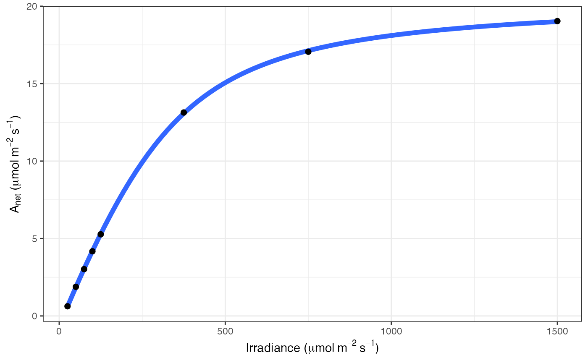
#Fit many curves fits <- fit_many(data = data, varnames = list(A_net = "A", PPFD = "Qin", group = "C_s"), funct = fit_aq_response, group = "C_s")
##
|
| | 0%
|
|======== | 11%
|
|================ | 22%
|
|======================= | 33%
|
|=============================== | 44%
|
|======================================= | 56%
|
|=============================================== | 67%
|
|====================================================== | 78%
|
|============================================================== | 89%
|
|======================================================================| 100%#Look at model summary for a given fit #First set of double parentheses selects an individual group value #Second set selects an element of the sublist summary(fits[[3]][[1]])
##
## Formula: A_net ~ aq_response(k_sat, phi_J, Q_abs = data$Q_abs, theta_J) -
## Rd
##
## Parameters:
## Estimate Std. Error t value Pr(>|t|)
## k_sat 7.347423 0.141931 51.768 8.33e-07 ***
## phi_J.Q_abs 0.027192 0.001511 17.994 5.61e-05 ***
## theta_J 0.837778 0.030608 27.371 1.06e-05 ***
## Rd.(Intercept) 0.615283 0.086994 7.073 0.00211 **
## ---
## Signif. codes: 0 '***' 0.001 '**' 0.01 '*' 0.05 '.' 0.1 ' ' 1
##
## Residual standard error: 0.06799 on 4 degrees of freedom
##
## Number of iterations to convergence: 4
## Achieved convergence tolerance: 1.49e-08#Print the parameters fits[[2]][[2]]
## A_sat phi_J theta_J Rd LCP resid_SSs
## k_sat 2.637157 0.01458002 0.8858892 0.5951635 42.17813 0.02446394#Print the graph fits[[3]][[3]]
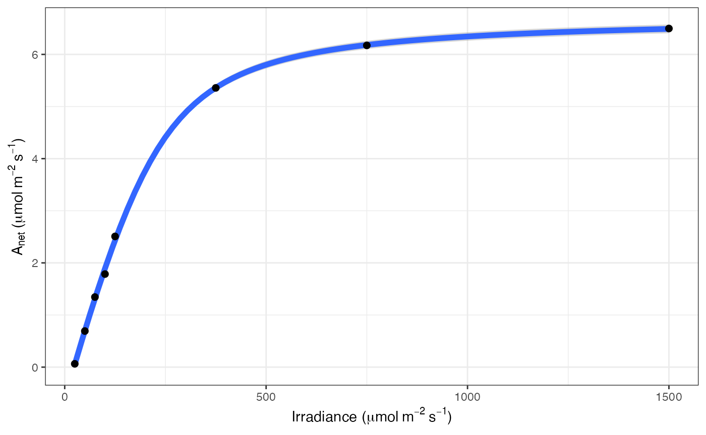
#Compile graphs into a list for plotting fits_graphs <- compile_data(fits, list_element = 3) #Print graphs to jpeg #print_graphs(data = fits_graphs, # path = tempdir(), # output_type = "jpeg") #Compile parameters into dataframe for analysis fits_pars <- compile_data(fits, output_type = "dataframe", list_element = 2)
#2. Fitting CO2 response curves
This package currently implements a Gu-type fitting procedure for CO2 response curves similar to the Duursma (2015) implementation. There is ongoing work to implement a full Gu-type method whereby mesophyll conductance, Km, and GammaStar could all be fit (Gu et al 2010). There is also ongoing work to implement a procedure to fit alphag for the TPU-limited region and to incorporate the Sharkey (2019) suggestion of using chlorophyll fluorescence data to inform TPU limitations.
#Read in your data #Note that this data is coming from data supplied by the package #hence the complicated argument in read.csv() #This dataset is a CO2 by light response curve for a single sunflower data <- read.csv(system.file("extdata", "A_Ci_Q_data_1.csv", package = "photosynthesis")) #Define a grouping factor based on light intensity to split the ACi #curves data$Q_2 <- as.factor((round(data$Qin, digits = 0))) #Convert data temperature to K data$T_leaf <- data$Tleaf + 273.15 #Fit ACi curve. Note that we are subsetting the dataframe #here to fit for a single value of Q_2 fit <- fit_aci_response(data[data$Q_2 == 1500, ], varnames = list(A_net = "A", T_leaf = "T_leaf", C_i = "Ci", PPFD = "Qin")) #View fitted parameters fit[[1]]
## Num V_cmax V_cmax_se J_max J J_se V_TPU V_TPU_se R_d
## 6 0 62.797 2.176227 110.3051 103.9718 0.1847135 1000 NA -0.3470509
## R_d_se cost citransition1 citransition2 V_cmax_pts J_max_pts V_TPU_pts
## 6 0.3947545 1.063979 427.6839 1450.485 8 4 0
## alpha alpha_g gamma_star25 Ea_gamma_star K_M25 Ea_K_M g_mc25 Ea_g_mc Oconc
## 6 0.24 0 42.75 37830 718.4 65508.28 0.08701 0 21
## theta_J
## 6 0.85#View graph fit[[2]]
## Warning: Removed 2 row(s) containing missing values (geom_path).## Warning: Removed 12 row(s) containing missing values (geom_path).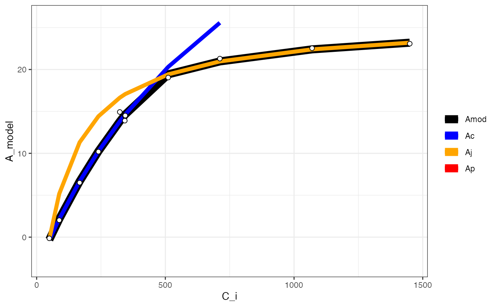
#View data with modeled parameters attached #fit[[3]] #Fit many curves fits <- fit_many(data = data, varnames = list(A_net = "A", T_leaf = "T_leaf", C_i = "Ci", PPFD = "Qin"), funct = fit_aci_response, group = "Q_2")
##
|
| | 0%
|
|========= | 12%
|
|================== | 25%
|
|========================== | 38%
|
|=================================== | 50%
|
|============================================ | 62%
|
|==================================================== | 75%
|
|============================================================= | 88%
|
|======================================================================| 100%#Print the parameters #First set of double parentheses selects an individual group value #Second set selects an element of the sublist fits[[3]][[1]]
## Num V_cmax V_cmax_se J_max J J_se V_TPU V_TPU_se R_d
## 6 0 8.94862 0.5509706 47.01527 16.63315 0.08692268 1000 NA -0.1565895
## R_d_se cost citransition1 citransition2 V_cmax_pts J_max_pts
## 6 0.1264438 0.1194886 441.2967 1442.493 8 4
## V_TPU_pts alpha alpha_g gamma_star25 Ea_gamma_star K_M25 Ea_K_M g_mc25
## 6 0 0.24 0 42.75 37830 718.4 65508.28 0.08701
## Ea_g_mc Oconc theta_J
## 6 0 21 0.85#Print the graph fits[[3]][[2]]
## Warning: Removed 12 row(s) containing missing values (geom_path).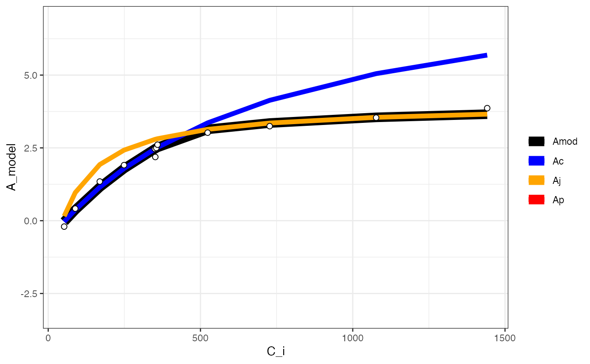
#Compile graphs into a list for plotting fits_graphs <- compile_data(fits, list_element = 2) #Print graphs to pdf. #print_graphs(data = fits_graphs, # path = tempdir(), # output_type = "pdf", # pdf_filename = "mygraphs.pdf") #Compile parameters into dataframe for analysis fits_pars <- compile_data(fits, output_type = "dataframe", list_element = 1)
#3. Fitting temperature response curves
This package provides support for multiple temperature response functions (Arrhenius 1915; Medlyn et al. 2002; Kruse & Adams. 2006; Heskel et al. 2016; Liang et al. 2018).
#Read in data data <- read.csv(system.file("extdata", "A_Ci_T_data.csv", package = "photosynthesis"), stringsAsFactors = FALSE) #Round temperatures to group them appropriately #Use sequential rounding data$T2 <- round(data$Tleaf, 1) data$T2 <- round(data$Tleaf, 0) #Look at unique values to detect rounding issues unique(data$T2)
## [1] 17 18 20 22 23 25 28 27 30 33 32 35 37 38 40#Some still did not round correctly, #manually correct for(i in 1:nrow(data)){ if(data$T2[i] == 18){ data$T2[i] <- 17 } if(data$T2[i] == 23){ data$T2[i] <- 22 } if(data$T2[i] == 28){ data$T2[i] <- 27 } if(data$T2[i] == 33){ data$T2[i] <- 32 } if(data$T2[i] == 38){ data$T2[i] <- 37 } } #Make sure it is a character string for grouping data$T2 <- as.character(data$T2) #Create grouping variable by ID and measurement temperature data <- unite(data, col = "ID2", c("ID", "T2"), sep = "_") #Split by temperature group data <- split(data, data$ID2) #Obtain mean temperature for group so temperature #response fitting is acceptable later, round to #2 decimal places for(i in 1:length(data)){ data[[i]]$Curve_Tleaf <- round(mean(data[[i]]$Tleaf), 2) } #Convert from list back to dataframe data <- do.call("rbind", data) #Parse grouping variable by ID and measurement temperature data <- separate(data, col = "ID2", into = c("ID", "T2"), sep = "_") #Make sure number of values matches number of measurement #temperatures. May vary slightly if plants had slightly #different leaf temperatures during the measurements unique(data$Curve_Tleaf)
## [1] 17.51 20.01 22.50 25.01 27.51 30.01 32.50 34.99 37.50 39.99 20.00 22.51
## [13] 25.02 40.01#Create ID column to curve fit by ID and temperature data <- unite(data, col = "ID2", c("ID", "Curve_Tleaf"), sep = "_") #Convert data temperature to K data$T_leaf <- data$Tleaf + 273.15 #Fit many CO2 response curves fits2 <- fit_many(data = data, group = "ID2", varnames = list(A_net = "A", C_i = "Ci", T_leaf = "T_leaf", PPFD = "Qin", g_mc = "g_mc"), funct = fit_aci_response, alphag = 0)
##
|
| | 0%
|
|==== | 5%
|
|======= | 10%
|
|========== | 15%
|
|============== | 20%
|
|================== | 25%
|
|===================== | 30%
|
|======================== | 35%
|
|============================ | 40%
|
|================================ | 45%
|
|=================================== | 50%
|
|====================================== | 55%
|
|========================================== | 60%
|
|============================================== | 65%
|
|================================================= | 70%
|
|==================================================== | 75%
|
|======================================================== | 80%
|
|============================================================ | 85%
|
|=============================================================== | 90%
|
|================================================================== | 95%
|
|======================================================================| 100%#Extract ACi parameters pars <- compile_data(fits2, output_type = "dataframe", list_element = 1) #Extract ACi graphs graphs <- compile_data(fits2, output_type = "list", list_element = 2) #Parse the ID variable pars <- separate(pars, col = "ID", into = c("ID", "Curve_Tleaf"), sep = "_") #Make sure curve leaf temperature is numeric pars$Curve_Tleaf <- as.numeric(pars$Curve_Tleaf) pars$T_leaf <- pars$Curve_Tleaf + 273.15 out <- fit_t_response(data = pars[pars$ID == "S2",], varnames = list(Par = "V_cmax", T_leaf = "T_leaf"), setvar = "Hd")
## Warning in fit_t_response(data = pars[pars$ID == "S2", ], varnames = list(Par =
## "V_cmax", : NAs introduced by coercion
## Warning in fit_t_response(data = pars[pars$ID == "S2", ], varnames = list(Par =
## "V_cmax", : NAs introduced by coercion
## Warning in fit_t_response(data = pars[pars$ID == "S2", ], varnames = list(Par =
## "V_cmax", : NAs introduced by coercion
## Warning in fit_t_response(data = pars[pars$ID == "S2", ], varnames = list(Par =
## "V_cmax", : NAs introduced by coercion
## Warning in fit_t_response(data = pars[pars$ID == "S2", ], varnames = list(Par =
## "V_cmax", : NAs introduced by coercion
## Warning in fit_t_response(data = pars[pars$ID == "S2", ], varnames = list(Par =
## "V_cmax", : NAs introduced by coercion
## Warning in fit_t_response(data = pars[pars$ID == "S2", ], varnames = list(Par =
## "V_cmax", : NAs introduced by coercion
## Warning in fit_t_response(data = pars[pars$ID == "S2", ], varnames = list(Par =
## "V_cmax", : NAs introduced by coercion
## Warning in fit_t_response(data = pars[pars$ID == "S2", ], varnames = list(Par =
## "V_cmax", : NAs introduced by coercionout[["Arrhenius"]][["Graph"]]
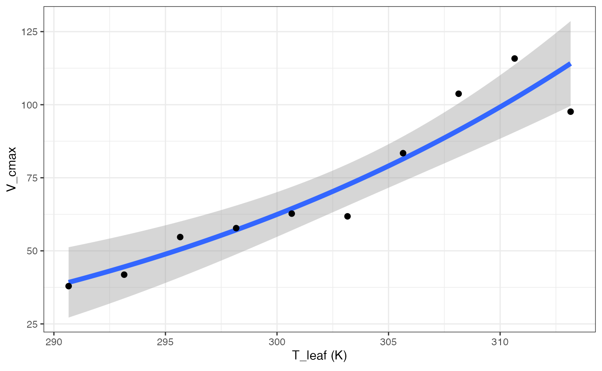
out[["Heskel"]][["Graph"]]
out[["Kruse"]][["Graph"]]
out[["Medlyn"]][["Graph"]]
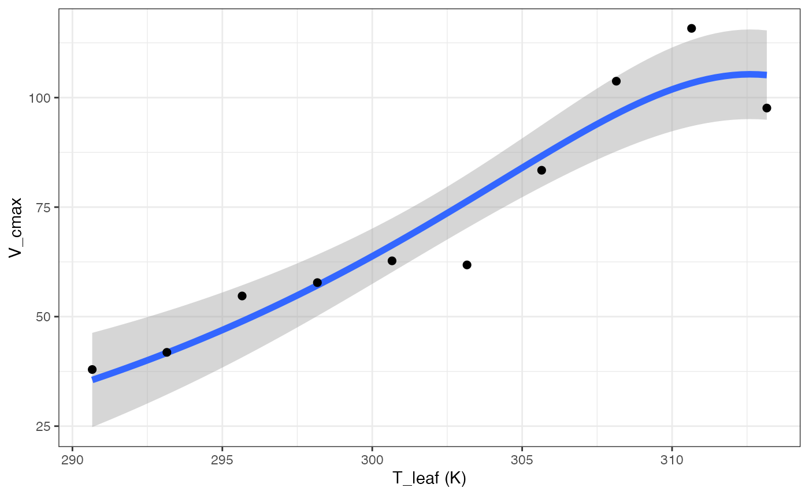
out[["MMRT"]][["Graph"]]
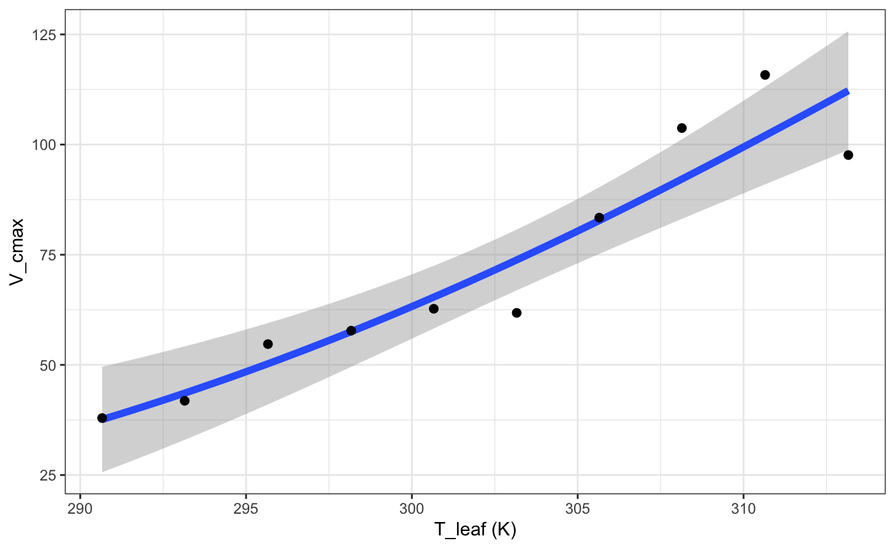
out[["Quadratic"]][["Graph"]]
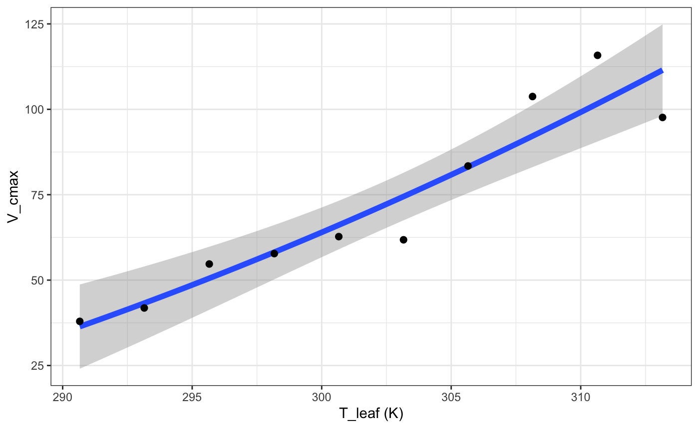
out[["Topt"]][["Graph"]]
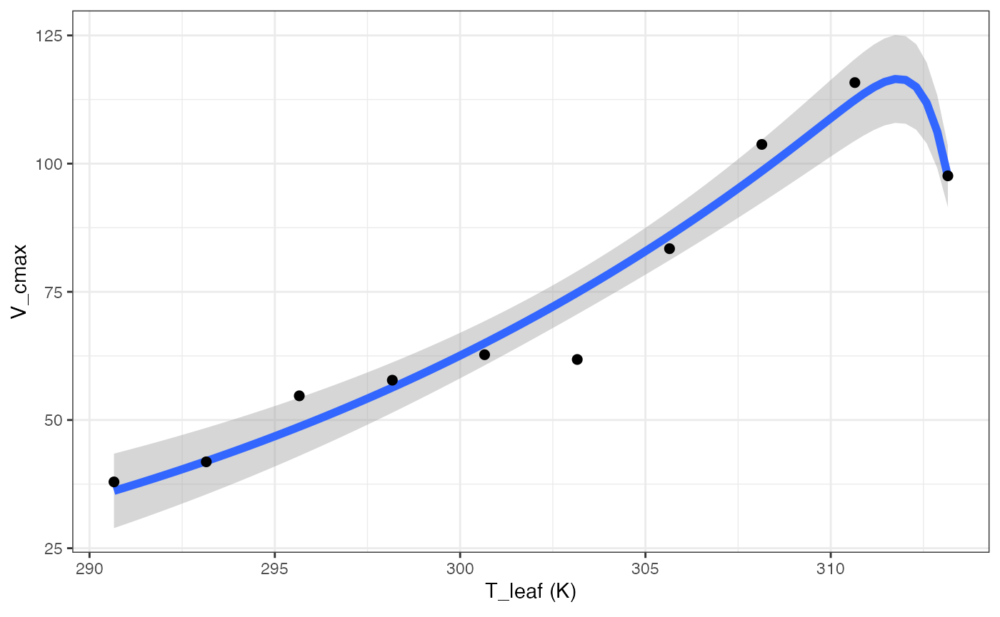
#4. Fitting stomatal conductance models
The package currently supports three varieties of stomatal conductance models (Ball et al. 1987; Leuning 1995; Medlyn et al. 2011).
#Read in your data #Note that this data is coming from data supplied by the package #hence the complicated argument in read.csv() #This dataset is a CO2 by light response curve for a single sunflower data <- read.csv(system.file("extdata", "A_Ci_Q_data_1.csv", package = "photosynthesis")) #Convert RH to a proportion data$RH <- data$RHcham / 100 #Fit stomatal conductance models #Can specify a single model, or all as below fits <- fit_gs_model(data = data, varnames = list(A_net = "A", C_air = "Ca", g_sw = "gsw", RH = "RH", VPD = "VPDleaf"), model = c("BallBerry", "Leuning", "Medlyn_partial", "Medlyn_full"), D0 = 3) #Look at BallBerry model summary: summary(fits[["BallBerry"]][["Model"]])
##
## Call:
## lm(formula = g_sw ~ gs_mod_ballberry(A_net = A_net, C_air = C_air,
## RH = RH), data = data)
##
## Residuals:
## Min 1Q Median 3Q Max
## -0.1516 -0.1007 -0.0557 0.1372 0.2498
##
## Coefficients:
## Estimate Std. Error
## (Intercept) 1.481e-01 1.471e-02
## gs_mod_ballberry(A_net = A_net, C_air = C_air, RH = RH) 1.627e-05 2.832e-06
## t value Pr(>|t|)
## (Intercept) 10.062 < 2e-16 ***
## gs_mod_ballberry(A_net = A_net, C_air = C_air, RH = RH) 5.744 1.13e-07 ***
## ---
## Signif. codes: 0 '***' 0.001 '**' 0.01 '*' 0.05 '.' 0.1 ' ' 1
##
## Residual standard error: 0.1248 on 94 degrees of freedom
## Multiple R-squared: 0.2598, Adjusted R-squared: 0.2519
## F-statistic: 32.99 on 1 and 94 DF, p-value: 1.132e-07#Look at BallBerry parameters fits[["BallBerry"]][["Parameters"]]
## g0 g1
## 1 0.1480627 1.62664e-05#Look at BallBerry plot fits[["BallBerry"]][["Graph"]]
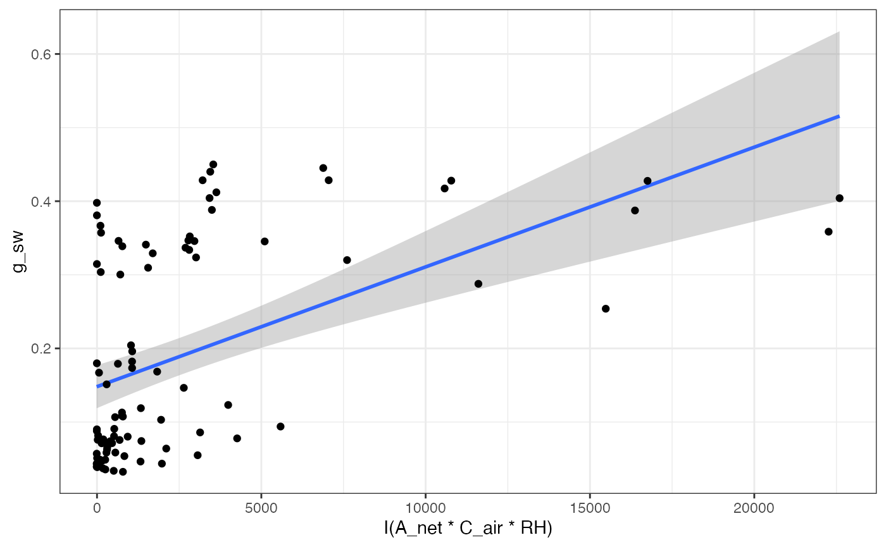
#Fit many g_sw models #Set your grouping variable #Here we are grouping by Qin and individual data$Q_2 <- as.factor((round(data$Qin, digits = 0))) fits <- fit_many(data, varnames = list(A_net = "A", C_air = "Ca", g_sw = "gsw", RH = "RH", VPD = "VPDleaf"), funct = fit_gs_model, group = "Q_2")
##
|
| | 0%Error in nlsModel(formula, mf, start, wts) :
## singular gradient matrix at initial parameter estimates
##
|
|========= | 12%
|
|================== | 25%
|
|========================== | 38%
|
|=================================== | 50%
|
|============================================ | 62%
|
|==================================================== | 75%
|
|============================================================= | 88%
|
|======================================================================| 100%#Look at the Medlyn_partial outputs at 750 PAR #Model summary summary(fits[["750"]][["Medlyn_partial"]][["Model"]])
##
## Formula: g_sw ~ gs_mod_opti(A_net = A_net, C_air = C_air, VPD = VPD, g0,
## g1)
##
## Parameters:
## Estimate Std. Error t value Pr(>|t|)
## g0 0.38778 0.03317 11.692 3.73e-07 ***
## g1 -1.09754 0.83022 -1.322 0.216
## ---
## Signif. codes: 0 '***' 0.001 '**' 0.01 '*' 0.05 '.' 0.1 ' ' 1
##
## Residual standard error: 0.04375 on 10 degrees of freedom
##
## Number of iterations to convergence: 2
## Achieved convergence tolerance: 1.49e-08#Model parameters fits[["750"]][["Medlyn_partial"]][["Parameters"]]
## g0 g1
## 1 0.3877773 -1.097544#Graph fits[["750"]][["Medlyn_partial"]][["Graph"]]
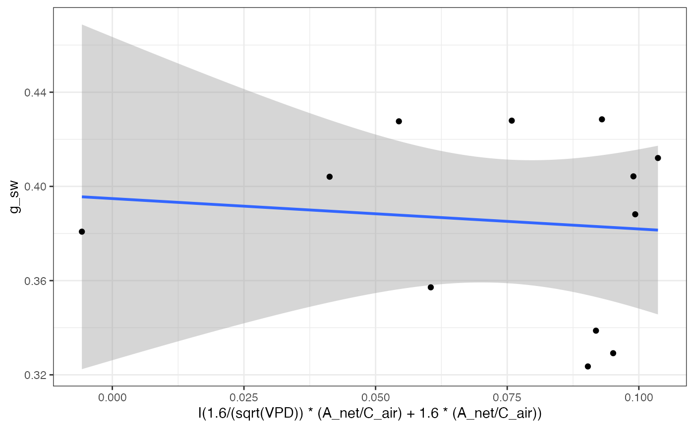
#Compile parameter outputs for BallBerry model #Note that it's the first element for each PAR value #First compile list of BallBerry fits bbmods <- compile_data(data = fits, output_type = "list", list_element = 1) #Now compile the parameters (2nd element) into a dataframe bbpars <- compile_data(data = bbmods, output_type = "dataframe", list_element = 2) #Convert group variable back to numeric bbpars$ID <- as.numeric(bbpars$ID) #Take quick look at light response of intercept parameters plot(g0 ~ ID, bbpars)
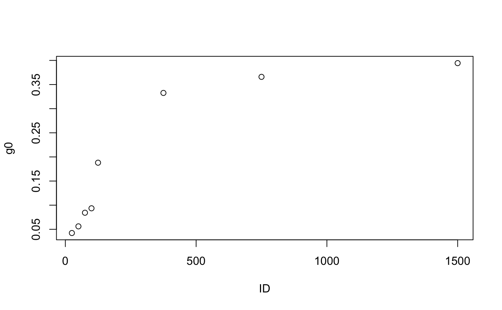
#Compile graphs graphs <- compile_data(data = bbmods, output_type = "list", list_element = 3) #Look at 3rd graph graphs[[3]]
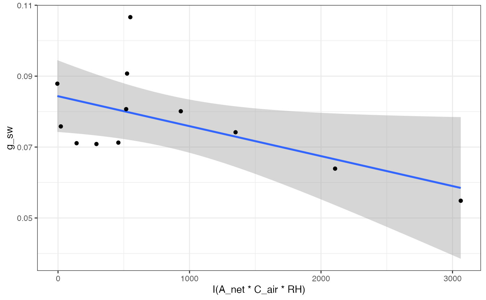
#5. Fitting light respiration
The package currently supports fitting light respiration according to the slope-intercept regression extension of the Laisk method (Laisk 1977; Walker & Ort 2015), the Kok method (Kok 1956), and the Yin modification of the Kok method (Yin et al. 2009, 2011)
#Read in your data #Note that this data is coming from data supplied by the package #hence the complicated argument in read.csv() #This dataset is a CO2 by light response curve for a single sunflower data <- read.csv(system.file("extdata", "A_Ci_Q_data_1.csv", package = "photosynthesis")) #Fit light respiration with Yin method r_light <- fit_r_light_yin(data = data, varnames = list(A_net = "A", PPFD = "Qin", phi_PSII = "PhiPS2"), PPFD_lower = 20, PPFD_upper = 250) #Fit light respiration with Kok method r_light <- fit_r_light_kok(data = data, varnames = list(A_net = "A", PPFD = "Qin"), PPFD_lower = 20, PPFD_upper = 150) #Set your grouping variable #Here we are grouping by CO2_s and individual data$C_s <-(round(data$CO2_s, digits = 0)) #For this example we need to round sequentially due to CO2_s setpoints data$C_s <- as.factor(round(data$C_s, digits = -1)) #Fit light respiration across groups with Yin method r_lights <- fit_many(data = data, funct = fit_r_light_yin, group = "C_s", varnames = list(A_net = "A", PPFD = "Qin", phi_PSII = "PhiPS2"), PPFD_lower = 20, PPFD_upper = 250)
##
|
| | 0%
|
|======== | 11%
|
|================ | 22%
|
|======================= | 33%
|
|=============================== | 44%
|
|======================================= | 56%
|
|=============================================== | 67%
|
|====================================================== | 78%
|
|============================================================== | 89%
|
|======================================================================| 100%#Compile the outputs - note this is slightly more complex because the #output of the fit_many above is a list of atomic vectors, not dataframes. group <- names(r_lights) r_lights <- do.call("c", r_lights) r_light_yin <- data.frame(x = group, y = r_lights, stringsAsFactors = FALSE) r_light_yin$x <- as.numeric(r_light_yin$x) colnames(r_light_yin) <- c("C_s", "r_light") #Fit the Walker-Ort method for GammaStar and light respiration walker_ort <- fit_r_light_WalkerOrt(data, varnames = list(A_net = "A", C_i = "Ci", PPFD = "Qin")) #View model output summary(walker_ort[[1]])
##
## Call:
## lm(formula = Intercept ~ Slope, data = coefs)
##
## Residuals:
## Min 1Q Median 3Q Max
## -0.36114 -0.10958 -0.05553 0.08166 0.62016
##
## Coefficients:
## Estimate Std. Error t value Pr(>|t|)
## (Intercept) -0.1526 0.1176 -1.297 0.224
## Slope -4.6004 0.4069 -11.307 5.1e-07 ***
## ---
## Signif. codes: 0 '***' 0.001 '**' 0.01 '*' 0.05 '.' 0.1 ' ' 1
##
## Residual standard error: 0.2513 on 10 degrees of freedom
## Multiple R-squared: 0.9275, Adjusted R-squared: 0.9202
## F-statistic: 127.8 on 1 and 10 DF, p-value: 5.103e-07#View graph walker_ort[[2]]
## `geom_smooth()` using formula 'y ~ x'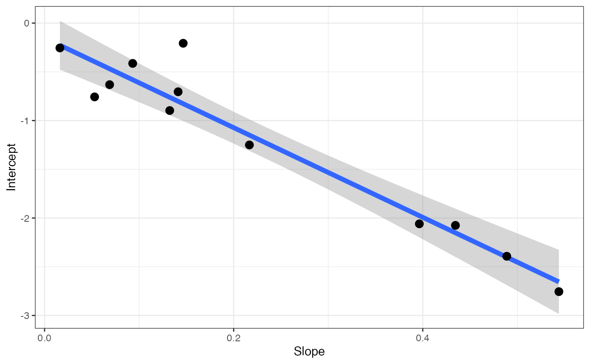
#View coeffients walker_ort[[3]]
## GammaStar r_light
## Slope 46.00427 -0.152643#6. Fitting mesophyll conductance
Currently there is only support for fitting mesophyll conductance according to the variable J method from Harley et al. 1992
#Read in your data #Note that this data is coming from data supplied by the package #hence the complicated argument in read.csv() #This dataset is a CO2 by light response curve for a single sunflower data <- read.csv(system.file("extdata", "A_Ci_Q_data_1.csv", package = "photosynthesis")) #Note: there will be issues here if the alpha value used #for calculating ETR is off, if GammaStar is incorrect, #if Rd is incorrect. data <- fit_g_mc_variableJ(data, varnames = list(A_net = "A", J_etr = "ETR", C_i = "Ci", PPFD = "Qin", phi_PSII = "PhiPS2"), gamma_star = 46, R_d = 0.153, usealpha_Q = TRUE, alpha_Q = 0.84, beta_Q = 0.5, P = 84) #Note that many g_mc values from this method can be unreliable ggplot(data, aes(x = CO2_s, y = g_mc, colour = reliable)) + labs(x = expression(CO[2]~"("*mu*mol~mol^{-1}*")"), y = expression(g[m]~"(mol"~m^{-2}~s^{-1}~Pa^{-1}*")")) + geom_point(size = 2) + theme_bw() + theme(legend.position = 'bottom')
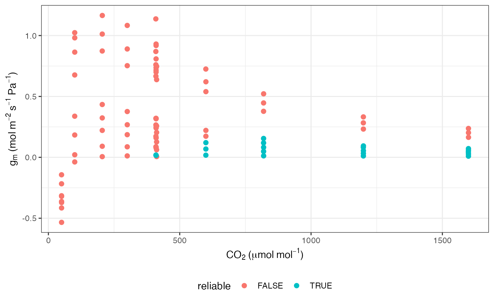
#Plot QAQC graph according to Harley et al. 1992 ggplot(data, aes(x = CO2_s, y = dCcdA, colour = reliable)) + labs(x = expression(CO[2]~"("*mu*mol~mol^{-1}*")"), y = expression(delta*C[c]*"/"*delta*A)) + geom_hline(yintercept = 10) + geom_point(size = 2) + theme_bw() + theme(legend.position = 'bottom')
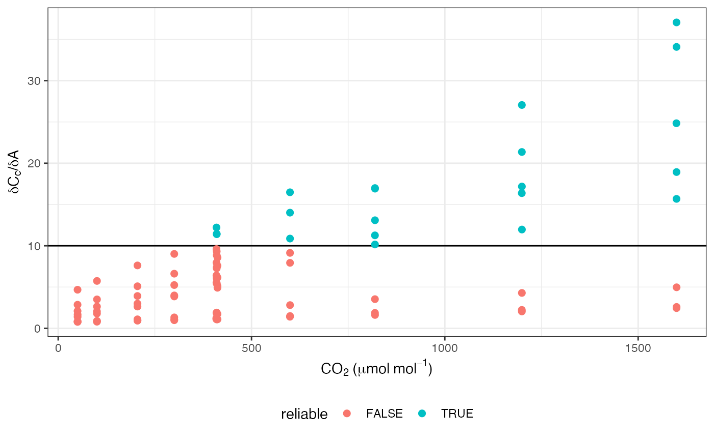
ggplot(data, aes(x = dCcdA, y = g_mc, colour = reliable)) + labs(x = expression(delta*C[c]*"/"*delta*A), y = expression(g[m]~"(mol"~m^{-2}~s^{-1}~Pa^{-1}*")")) + geom_point(size = 2) + theme_bw() + theme(legend.position = 'bottom')
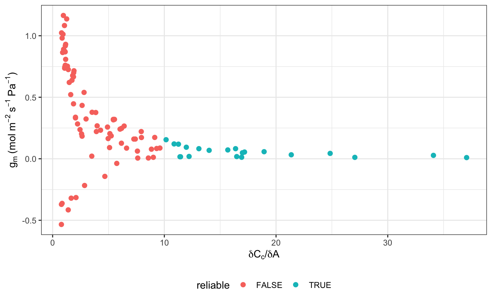
#7. Fitting pressure-volume curves
This package follows the Prometheus wiki spreadsheet from Sack and Pasquet-Kok at:
http://prometheuswiki.org/tiki-index.php?page=Leaf+pressure-volume+curve+parameters.
For references, see Koide et al. 2000, Sack et al. 2003, and Tyree & Hammel 1972.
#Read in data data <- read.csv(system.file("extdata", "PV_curve.csv", package = "photosynthesis")) #Fit one PV curve fit <- fit_PV_curve(data[data$ID == "L2", ], varnames = list(psi = "psi", mass = "mass", leaf_mass = "leaf_mass", bag_mass = "bag_mass", leaf_area = "leaf_area")) #See fitted parameters fit[[1]]
## SWC PI_o psi_TLP RWC_TLP eps C_FT C_TLP C_FTStar
## 1 2.438935 -1.399302 -1.75 88.67684 12.20175 0.06456207 0.09923338 0.5161476#Plot water mass graph fit[[2]]
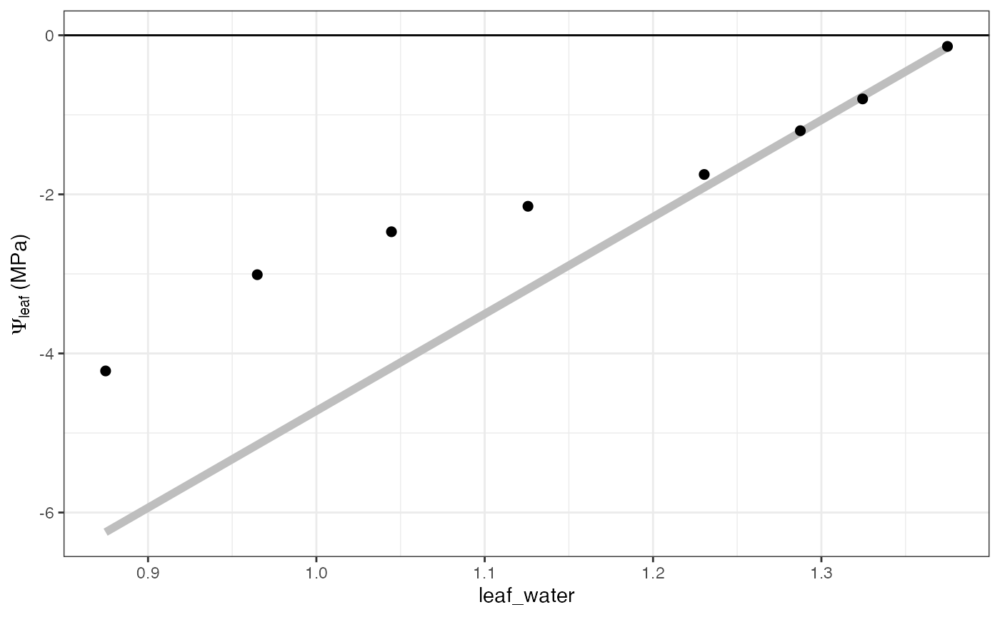
#Plot PV Curve fit[[3]]
#Fit all PV curves in a file fits <- fit_many(data, group = "ID", funct = fit_PV_curve, varnames = list(psi = "psi", mass = "mass", leaf_mass = "leaf_mass", bag_mass = "bag_mass", leaf_area = "leaf_area"))
##
|
| | 0%
|
|======================= | 33%
|
|=============================================== | 67%
|
|======================================================================| 100%#See parameters fits[[1]][[1]]
## SWC PI_o psi_TLP RWC_TLP eps C_FT C_TLP C_FTStar
## 1 2.438935 -1.399302 -1.75 88.67684 12.20175 0.06456207 0.09923338 0.5161476#See water mass - water potential graph fits[[1]][[2]]
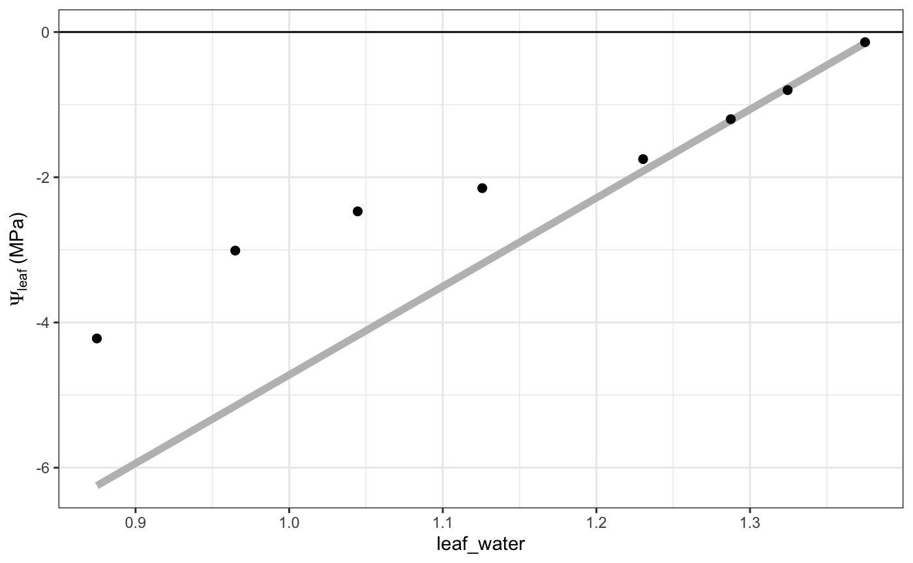
#See PV curve fits[[1]][[3]]
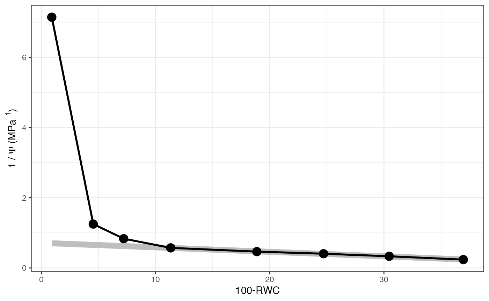
#Compile parameter outputs pars <- compile_data(data = fits, output_type = "dataframe", list_element = 1) #Compile the water mass - water potential graphs graphs1 <- compile_data(data = fits, output_type = "list", list_element = 2) #Compile the PV graphs graphs2 <- compile_data(data = fits, output_type = "list", list_element = 3)
#8. Fitting hydraulic vulnerability curves
Current approach fits a sigmoidal model and calculates hydraulic parameters from the curve fit. See Pammenter & Van der Willigen, 1998 and Ogle et al. 2009.
#Read in data data <- read.csv(system.file("extdata", "hydraulic_vulnerability.csv", package = "photosynthesis")) #Fit hydraulic vulnerability curve fit <- fit_hydra_vuln_curve(data[data$Tree == 5 & data$Plot == "Irrigation",], varnames = list(psi = "P", PLC = "PLC"), start_weibull = list(a = 2, b = 1), title = "Irrigation 5") #Return Sigmoidal model summary summary(fit[[1]])
##
## Call:
## lm(formula = H_log ~ psi, data = data[data$H_log < Inf, ])
##
## Residuals:
## 14 15 16 17 18
## 0.40236 -0.63441 0.01791 0.09292 0.12121
##
## Coefficients:
## Estimate Std. Error t value Pr(>|t|)
## (Intercept) 5.1700 0.5344 9.675 0.00234 **
## psi -1.0884 0.1212 -8.982 0.00291 **
## ---
## Signif. codes: 0 '***' 0.001 '**' 0.01 '*' 0.05 '.' 0.1 ' ' 1
##
## Residual standard error: 0.4427 on 3 degrees of freedom
## Multiple R-squared: 0.9642, Adjusted R-squared: 0.9522
## F-statistic: 80.68 on 1 and 3 DF, p-value: 0.002912#Return Weibull model summary summary(fit[[4]]) #expecting a = 4.99, b = 3.22
##
## Formula: K.Kmax ~ exp(-((psi/a)^b))
##
## Parameters:
## Estimate Std. Error t value Pr(>|t|)
## a 5.3160 0.0902 58.93 4.96e-07 ***
## b 2.7778 0.2393 11.61 0.000315 ***
## ---
## Signif. codes: 0 '***' 0.001 '**' 0.01 '*' 0.05 '.' 0.1 ' ' 1
##
## Residual standard error: 0.02867 on 4 degrees of freedom
##
## Number of iterations to convergence: 8
## Achieved convergence tolerance: 1.49e-08#Return model parameters with 95% confidence intervals fit[[2]]
## Value Parameter Curve
## b...1 4.749922 b Sigmoidal
## a...2 -1.088445 a Sigmoidal
## b...3 2.777799 b Weibull
## a...4 5.315979 a Weibull#Return hydraulic parameters fit[[3]]
## P25 P50 P88 P95 S50 Pe Pmax DSI
## 1 3.740581 4.749922 6.580451 7.455102 27.21113 2.912439 6.587406 3.674967
## 2 3.394637 4.658873 6.967591 7.890836 20.66405 2.239211 7.078534 4.839322
## Curve
## 1 Sigmoidal
## 2 Weibull#Return graph #fit[[5]] data <- unite(data, col = "ID", c("Plot", "Tree"), sep = "_") #fit many function check to make sure it works for weibull #Fit many curves fits <- fit_many(data = data, varnames = list(psi = "P", PLC = "PLC"), group = "ID", start_weibull = list(a = 4, b = 2), #group = "Tree", funct = fit_hydra_vuln_curve)
##
|
| | 0%
|
|======== | 11%
|
|================ | 22%
|
|======================= | 33%
|
|=============================== | 44%
|
|======================================= | 56%
|
|=============================================== | 67%
|
|====================================================== | 78%
|
|============================================================== | 89%
|
|======================================================================| 100%#To select individuals from the many fits #Return model summary summary(fits[[1]][[1]]) #Returns model summary
##
## Call:
## lm(formula = H_log ~ psi, data = data[data$H_log < Inf, ])
##
## Residuals:
## 44 45 46 47 48
## -0.15427 0.06136 0.23623 0.20568 -0.34900
##
## Coefficients:
## Estimate Std. Error t value Pr(>|t|)
## (Intercept) 5.72729 0.34666 16.52 0.000483 ***
## psi -1.41591 0.07861 -18.01 0.000373 ***
## ---
## Signif. codes: 0 '***' 0.001 '**' 0.01 '*' 0.05 '.' 0.1 ' ' 1
##
## Residual standard error: 0.2872 on 3 degrees of freedom
## Multiple R-squared: 0.9908, Adjusted R-squared: 0.9878
## F-statistic: 324.4 on 1 and 3 DF, p-value: 0.0003733#Return sigmoidal model output fits[[1]][[2]]
## Value Parameter Curve
## b...1 4.044964 b Sigmoidal
## a...2 -1.415905 a Sigmoidal
## b...3 3.905565 b Weibull
## a...4 4.580836 a Weibull#Return hydraulic parameters fits[[1]][[3]]
## P25 P50 P88 P95 S50 Pe Pmax DSI
## 1 3.269056 4.044964 5.452141 6.124509 35.39764 2.632440 5.457488 2.825047
## 2 3.329677 4.170508 5.552841 6.066678 32.45566 2.629945 5.711071 3.081127
## Curve
## 1 Sigmoidal
## 2 Weibull#Return graph fits[[1]][[5]]
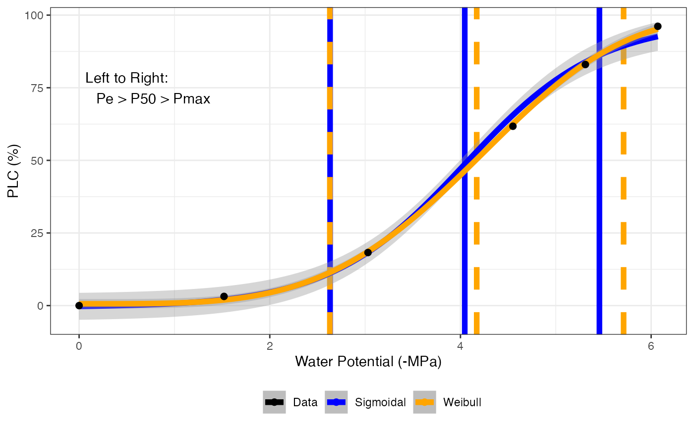
#Compile parameter outputs pars <- compile_data(data = fits, output_type = "dataframe", list_element = 3) #Compile graphs graphs <- compile_data(data = fits, output_type = "list", list_element = 5)
#9. Sensitivity analyses
This segment outlines a set of functions that can be used to assess the sensitivity of data outputs to assumed parameters. For example, assuming different values of GammaStar, mesophyll conductance, and light absorbance on fitted gas exchange parameters.
Uncomment the chunk below to run - it takes awhile. #```{r} #Read in your data #Note that this data is coming from data supplied by the package #hence the complicated argument in read.csv() #This dataset is a CO2 by light response curve for a single sunflower data <- read.csv(system.file(“extdata”, “A_Ci_Q_data_1.csv”, package = “photosynthesis”))
#Define a grouping factor based on light intensity to split the ACi #curves data\(Q_2 <- as.factor((round(data\)Qin, digits = 0)))
#Convert data temperature to K data\(T_leaf <- data\)Tleaf + 273.15
#Run a sensitivity analysis on GammaStar and mesophyll conductance #at 25 Celsius for one individual curve pars <- analyze_sensitivity(data = data[data$Q_2 == 1500, ], funct = fit_aci_response, varnames = list(A_net = “A”, T_leaf = “T_leaf”, C_i = “Ci”, PPFD = “Qin”), useg_mct = TRUE, test1 = “gamma_star25”, element_out = 1, test2 = “g_mc25”, fitTPU = TRUE, Ea_gamma_star = 0, Ea_g_mc = 0, values1 = seq(from = 20, to = 60, by = 4), values2 = seq(from = 0.2, to = 2, by = 0.1))
#Compute measures of sensitivity par2 <- compute_sensitivity(data = pars, varnames = list(Par = “V_cmax”, test1 = “gamma_star25”, test2 = “g_mc25”), test1_ref = 40, test2_ref = 1) #Plot sensitivity ggplot(par2, aes(y = CE_gamma_star25, x = CE_g_mc25, colour = V_cmax))+ labs(x = expression(g_mc[25]~“Control Coefficient”), y = expression(Gamma[25]~“Control Coefficient”)) + geom_point() + theme_bw()
ggplot(par2, aes(y = CE_gamma_star25, x = V_cmax, colour = gamma_star25))+ geom_point() + theme_bw() #Note that in this case a missing point appears due to an infinity #Can also plot sensitivity measures in 2 dimensions ggplot(par2, aes(x = gamma_star25, y = g_mc25, z = CE_gamma_star25))+ geom_tile(aes(fill = CE_gamma_star25)) + labs(x = expression(Gamma“"[25]"("mumolmol^{-1}”)"), y = expression(g[m][25]“(”mumolm{-2}~s{-1}~Pa^{-1}“)”))+ scale_fill_distiller(palette = “Greys”) + geom_contour(colour = “Black”, size = 1) + theme_bw()
plot(PE_gamma_star25 ~ gamma_star25, par2) #```
#10. Dependency checking
A function can be used to generate an html file that assesses the dependencies within and between packages
#check_dependencies()#References
Arrhenius S. 1915. Quantitative laws in biological chemistry. Bell.
Ball JT, Woodrow IE, Berry JA. 1987. A model predicting stomatal conductance and its contribution to the control of photosynthesis under different environmental conditions, in Progress in Photosynthesis Research, Proceedings of the VII International Congress on Photosynthesis, vol. 4, edited by I. Biggins, pp. 221–224, Martinus Nijhoff, Dordrecht, Netherlands.
Duursma R. 2015. Plantecophys - an R package for analysing and modeling leaf gas exchange data. PLoS ONE 10:e0143346
Erhardt EB. 2019. RLicor: Read Licor files. R package version 0.0.01.
Gu L, Pallardy SG, Tu K, Law BE, Wullschleger SD. 2010. Reliable estimation of biochemical parameters from C3 leaf photosynthesis- intercellular carbon dioxide response curves. Plant Cell Environ 33:1582-1874.
Harley PC, Loreto F, Di Marco G, Sharkey TD. 1992. Theoretical considerations when estimating mesophyll conductance to CO2 flux by analysis of the response of photosynthesis to CO2. Plant Physiol 98:1429 - 1436.
Heskel MA, O’Sullivan OS, Reich PB, Tjoelker MG, Weerasinghe LK, Penillard A, Egerton JJG, Creek D, Bloomfield KJ, Xiang J, Sinca F, Stangl ZR, la Torre AM, Griffin KL, Huntingford C, Hurry V, Meir P, Turnbull MH, Atkin OK. 2016. Convergence in the temperature response of leaf respiration across biomes and plant functional types. PNAS 113:3832-3837
Hobbs JK, Jiao W, Easter AD, Parker EJ, Schipper LA, Arcus VL. 2013. Change in heat capacity for enzyme catalysis determines temperature dependence of enzyme catalyzed rates. ACS Chemical Biology 8:2388-2393.
Koide RT, Robichaux RH, Morse SR, Smith CM. 2000. Plant water status, hydraulic resistance and capacitance. In: Plant Physiological Ecology: Field Methods and Instrumentation (eds RW Pearcy, JR Ehleringer, HA Mooney, PW Rundel), pp. 161-183. Kluwer, Dordrecht, the Netherlands
Kok B. 1956. On the inhibition of photosynthesis by intense light. Biochimica et Biophysica Acta 21: 234–244
Kruse J, Adams MA. 2008. Three parameters comprehensively describe the temperature response of respiratory oxygen reduction. Plant Cell Environ 31:954-967
Laisk A. 1977. Kinetics of photosynthesis and photorespiration in C3 plants. Nauka, Moscow.
Leuning R. 1995. A critical appraisal of a coupled stomatal- photosynthesis model for C3 plants. Plant Cell Environ 18:339-357
Liang LL, Arcus VL, Heskel MA, O’Sullivan OS, Weerasinghe LK, Creek D, Egerton JJG, Tjoelker MG, Atkin OK, Schipper LA. 2018. Macromolecular rate theory (MMRT) provides a thermodynamics rationale to underpin the convergent temperature response in plant leaf respiration. Glob Chang Biol 24:1538-1547
Marshall B, Biscoe P. 1980. A model for C3 leaves describing the dependence of net photosynthesis on irradiance. J Ex Bot 31:29-39
Medlyn BE, Dreyer E, Ellsworth D, Forstreuter M, Harley PC, Kirschbaum MUF, Le Roux X, Montpied P, Strassemeyer J, Walcroft A, Wang K, Loutstau D. 2002. Temperature response of parameters of a biochemically based model of photosynthesis. II. A review of experimental data. Plant Cell Environ 25:1167-1179
Medlyn BE, Duursma RA, Eamus D, Ellsworth DS, Prentice IC, Barton CVM, Crous KY, Angelis PD, Freeman M, Wingate L. 2011. Reconciling the optimal and empirical approaches to modeling stomatal conductance. Glob Chang Biol 17:2134-2144
Ogle K, Barber JJ, Willson C, Thompson B. 2009. Hierarchical statistical modeling of xylem vulnerability to cavitation. New Phytologist 182:541-554
Pammenter NW, Van der Willigen CV. 1998. A mathematical and statistical analysis of the curves illustrating vulnerability of xylem to cavitation. Tree Physiology 18:589-593
Sack L, Cowan PD, Jaikumar N, Holbrook NM. 2003. The ‘hydrology’ of leaves: co-ordination of structure and function in temperate woody species. Plant, Cell and Environment, 26, 1343-1356
Sharkey TD. 2019. Is triose phosphate utilization important for understanding photosynthesis? Journal of Experimental Botany 70, 5521-5525
Tyree MT, Hammel HT. 1972. Measurement of turgor pressure and water relations of plants by pressure bomb technique. Journal of Experimental Botany, 23, 267
Walker BJ, Ort DR. 2015. Improved method for measuring the apparent CO2 photocompensation point resolves the impact of multiple internal conductances to CO2 to net gas exchange. Plant Cell Environ 38:2462- 2474
Yin X, Struik PC, Romero P, Harbinson J, Evers JB, van der Putten PEL, Vos J. 2009. Using combined measurements of gas exchange and chlorophyll fluorescence to estimate parameters of a biochemical C3 photosynthesis model: a critical appraisal and a new integrated approach applied to leaves in a wheat (Triticum aestivum) canopy. Plant Cell Environ 32:448-464
Yin X, Sun Z, Struik PC, Gu J. 2011. Evaluating a new method to estimate the rate of leaf respiration in the light by analysis of combined gas exchange and chlorophyll fluorescence measurements. Journal of Experimental Botany 62: 3489–3499